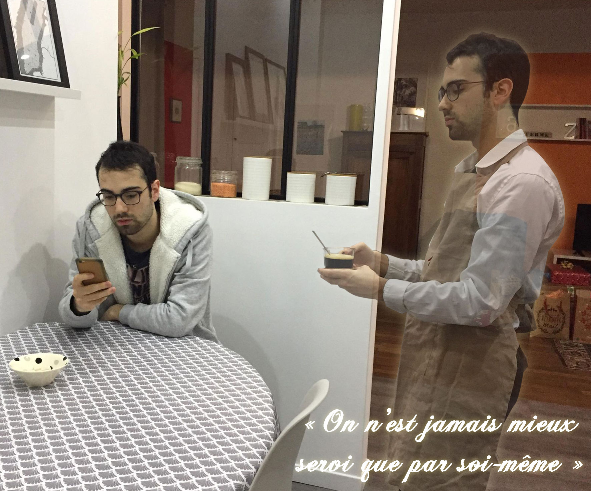
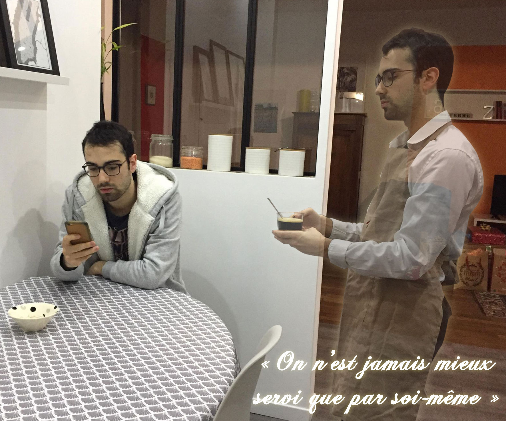

Voilà donc...Je pense que vous l'aurez compris. Cette fusée, c'est moi, Paul BRILLAND.Oh ? Que se passe-t-il, la fusée semble aspirée dans une brèche ? Que faire ??
ATTENDRE
Y ALLER !
Là où elle croit pouvoir se démarquer de ses nombreuses homologues devant la galaxie du web, c'est au niveau des astres infographiques et maquetique.Elle souhaite communiquer et véhiculer des messages au travers d'infographies,et elle en est sure, ses longues heures passées à admirer les différents astresde la galaxie du web lui offrent un vrai bagage et un certain souci du détail dans l'ergonomie d'un visuel.
On la trouve vite grandie des nombreuses expériences qu'elle a vécues durant sa formation ;On remarque autour d'elle qu'elle a su mettre à profit ses qualités pour découvrir le monde qui la passionne tant.La voilà maintenant capable de monter des vidéos, de retoucher des images, de créer des illustrations, et même de concevoir et réaliser des pages web.

Non sans quelques craintes au début, elle trouva vite sa place parmi ses homologues.Elle avait cette capacité à s'entourer et à se sociabiliser. Sa timidité est très vite vaincue.Sa passion pour la galaxie du web l'a poussée à montrer tout l'investissement et la détermination qui coule en elle.Et, bien que la route vers son objectif fut longue, et parfois semée d'embuches, elle a su s'adapter et garder la tête haute.
Voici une mystérieuse petite fusée. C'est très tôt après son assemblement qu'elle a montré son attrait pour la galaxie "internet". On la voyait souvent se pencher sur les astres "vidéo" "réseaux sociaux" et "création",elle passait des heures et des heures à les contempler. En grandissant elle en était sure : elle voulait les atteindre et contribuer à leur grandeur. La voilà partie, prête à conquérir cet univers.
CLIQUEZ SUR LA FUSÉE POUR LE LANCEMENT
APPUYEZ SUR LE BOUTON POUR DEMARRER
merci d'avoir attendu,regardez ce que j'ai trouvé, je vous l'offre !
si vous voyez ceci, merci de dézoomer pour voir le pdf
merci d'être venu me chercher,regardez ce que j'ai trouvé !
si vous voyez ceci, merci de dézoomer pour voir le pdf
 

De tous les domaines que j'ai pratiqué durant mes études en multimédia, la retouche de photo et création de visuels infographiques sont probablement ceux que j'ai commencé à utiliser en premier. En effet dès mon plus jeune âge j'ai commencé à jouer avec ces logiciels de retouche photo, au début de manière très basique... Avec l'âge j'ai commencé à réaliser des visuels plus sérieux afin d'attirer l'oeil sur les vidéos de ma chaîne Youtube. J'ai peut-être mis un certain temps avant de vraiment pouvoir présenter un rendu "passable". Lorsque j'ai une idée de réalisation infographique, ou de retouche photo, je commence d'abord par chercher les bonnes matières premières. Je passe parfois la majorité du temps d'un projet à trouver l'image source parfaite (bonne qualité, beau visuel...). Ensuite seulement je crée le fichier. De par mes études j'ai appris très rapidement qu'une image en 300ppp offrira le meilleur rendu possible et qu'il était conseillé de créer ses fichiers à ce format-ci. Pour ce qui est du travail de l'image en lui-même je dirais qu'il diffère énormément en fonction du type de visuel demandé. Par exemple, pour l'infographie de prévention routière ce sont surtout les outils plume et de colorimétrie qui ont été mis à l'honneur.
Le montage vidéo est l'un des domaines les plus passionnants parmi ceux abordés en DUT Métiers du Multimédia et de l'Internet. J'ai longtemps voulu réaliser des courts-métrages vidéo destinés à internet. Même si ce n'était plus le cas lors de mon arrivée en DUT MMI, j'ai toujours un intérêt certain pour ce vaste monde. L'IUT dans lequel j'ai fait mes études m'a permis de pouvoir manipuler pour la première fois du matériel professionnel, je possède donc certaines notions sommaires en production audiovisuelle. En revanche ce que j'ai été le plus amené à faire, que ce soit durant mon temps libre, ou pour des projets scolaires, c'est le montage vidéo. Après avoir enregistré mes rushs avec la caméra et les sons avec micro, la première étape c'est de synchroniser les pistes. Ceci fait, il faut ensuite procéder au dérushage. Une fois ces parties initiales réalisées, on peut commencer à exprimer sa créativité. A l'aide d'un storyboard réalisé au préalable on place les plans dans le bon ordre et on donne vie au projet ! C'est très satisfaisant de sentir qu'on se rapproche de ce qu'on avait en tête au départ.
Pour ce qui est de l'expérience utilisateur, durant ma formation multimédia, j'ai appris à réfléchir aux moyens de créer l'interface optimale pour l'utilisateur. On nous a appris à toujours commencer par étudier la cible, via des personnas par exemple, afin de comprendre à qui on a affaire et comment s'adapter à ses habitudes d'utilisation. Dans le cadre d'une entreprise il est aussi important de se renseigner sur ses concurrents au travers d'une veille concurrentielle, où l'on dresse un tableau SWOT des points-clés des sites de nos homologues. Vient ensuite la phase wireframe, où l'on dresse un premier jet de la page à réaliser très basiquement avec simplement les emplacements des boutons et les quelques zones principales. (voir pdf de gauche) Enfin, quand ce wireframe (ou zoning) est validé, on peut enfin commencer la maquette UI Design, ma partie préférée. On doit produire un rendu le plus proche possible du site final après son développement. Il faut alors un prototype le plus complet et interactif possible. (voir pdf de droite)